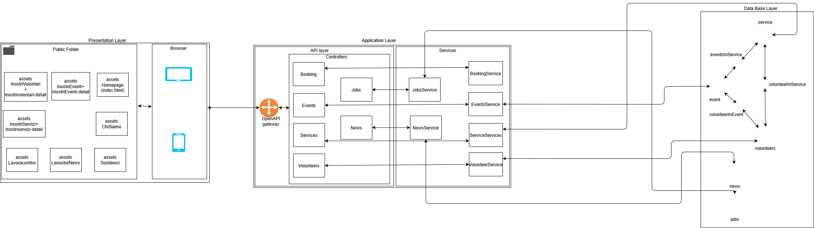

Deliverable D1
General group information
| Member n. | Role | First name | Last Name | Matricola | Email address |
|---|---|---|---|---|---|
| 1 | administrator | Marco | Premi | 10526255 | marco.premi@mail.polimi.it |
| 2 | member | Fabrizio | Siciliano | 10522031 | fabrizio.siciliano@mail.polimi.it |
| 3 | member | Davide | Clementi | 10457819 | davide2.clementi@mail.polimi.it |
Links to other deliverables
- Deliverable D0: the web application is accessible at this address.
- Deliverable D2: the YAML or JSON file containing the specification of the app API can be found at this address.
- Deliverable D3: the SwaggerUI page of the same API is available at this address.
- Deliverable D4: the source code of D0 is available as a zip file at this address.
- Deliverable D5: the address of the online source control repository
is available this address. We hereby
declare that this is a private repository and, upon request, we will
give access to the instructors.
Specification
Web Architecture
Describe here, with a diagram, the components of your web application and how they interact. Highlight which parts belong to the application layer, data layer or presentation layer. How did you ensure that HTML is not rendered server side?  Nello sviluppo del nostro sito abbiamo deciso di considerare alcune pagine che non necessitano dell' interazione con il data base (data layer) ma che risiedono soltanto all' interno dell' application e presentation layer, in quanto le informazioni che vi sono contenute saranno soggette a poche modifiche nel tempo e non richiedono perciò un caricamento da database. Queste pagine sono: - HomePage
- Chi Siamo
- Raggiungici
- Sostienici
- Contattaci Le informazioni relative invece alle pagine che necessitano un caricamento di informazioni sono state salvate all' interno del Database (data layer). Le informazioni contenute in queste pagine possono infatti cambiare e dover essere aggiornate nel tempo, in quanto possono aggiungersi o cancellarsi o dare una nuova versione di alcuni contenuti. Le pagine che appartengono all'application e presentation layer ma che necessitano di un' interazione con il data layer sono:
- Le nostre News
- I nostri volontari (con l'aggiunta delle pagine dettagliate dei volontari singoli)
- I nostri eventi (con l' aggiunta delle pagine dettagliate dei singoli eventi)
- I nostri servizi (con l' aggiunta delle pagine dettagliate dei singoli servizi)
- Lavora con noi
- Lavora con noi (nell' ER viene indicato con Open Position e all' interno del DB come jobs)
- Le nostre News (nell' ER viene indicato con News e all' interno del DB come news)
- I nostri volontari (nell' ER viene indicato con Volunteer e all' interno del DB come voluteers)
- I nostri eventi (nell' ER viene indicato con News e all' interno del DB come news)
- I nostri servizi (nell' ER viene indicato con Service e all' interno del DB come service) Le tabelle ponte rappresentate a livello di logical Design , utilizzate per rappresentare le associazioni 0:N, e nell'ER come relazioni, sono state rispettate a livello di Database. Con l' unica differenza che abbiamo deciso di dividere Volunteer_Assigned_To in due tabelle che sono volunteerInEvent e volunteerInService. Il mapping con le OpenApi è stato fatto rispettando le tabelle e gli attributi contenuti al loro interno, rispettandone quanto più possibile anche la nomenclatura. Assegnando quindi a ciascuna tabella del database una corrispondenza con il relativo component chiamato con il medesimo nome. Le tabelle ponte sono associate soltanto
- How did you make sure your web application adheres to the provided OpenAPI specification? Which method did you use to test all APIs endpoints against the expected response? Il test delle OpenAPI l' abbiamo fatto tramite l' utilizzo diretto dell' URL, verificando che le risposte caricate, a seguito delle query, siano coerenti con quanto scritto sul documento yaml, verificando cioè che i dati caricati siano gli stessi.
- Why do you think your web application adheres to common practices to partition a REST-based web application (static assets vs. application data) La nostra applicazione web rispetta le pratiche comuni relative alla partizione del sito e alla conseguente suddivisione delle pagine che fanno riferimento ad uno static assets e altre che basano la loro logica sull'application data, al cui interno bisogna considerare la suddivisione in openAPI gateway, controller e service. L' applicazione considera infatti i dati relativi ad alcune pagine soggetti a variazione nel tempo e di conseguenza l' utilizzo di un' application server risulta essere necessario per poter interfacciarsi e interrogare il database. Nel restante caso i dati che non necessitano di query specifiche a database sono stati considerati come static assets. Abbiamo considerato opportuna ed efficace questa soluzione per rendere più performante il caricamento delle pagine.
- Describe synthetically why and how did you manage session state, what are the state change triggering actions (e.g., POST to login etc..). Nella nostra applicazione non abbiamo ritenuto strettamente necessario l' utilizzo di una sezione di login in quanto tutti i contatti vengono esposti nel sito e una sezione dedicata all' autenticazione dell' utente l' abbiamo considerata poco coerente con il sito che siamo andati a sviluppare. Le API che sono state implementate sono delle GET da Database che hanno lo scopo di creare dei modelli per le funzioni, implementate successivamente da backend, per caricare le informazioni contenute all' interno DB. La POST relativa alla prenotazione di un evento specifico è stata pensata a livello di specifiche ma non è stata poi di fatto implementata lato backend.
- Which technology did you use (relational or a no-SQL database) for
managing the data model?
La tipologia di database utilizzata nello sviluppo del sito è postgress, un object-relational database. Le struttura utillizata per
il salvataggio dei dati sono infatti delle tabelle in cui la prima riga è rappresentata dagli attributi relativi alle informazioni dei singoli oggetti.
Le righe successive alla prima rappresentano i dati veri e propri e in quanto tali sono caratterizzati da una chiave primaria.
Sono state aggiunte inoltre delle chiavi esterne per tenere conto dei collegamenti che sono presenti nelle tabelle ponte (Service->Events,
Events->Service, Volunteer->Events, Events->Volunteer, Volunteer->Service e Service->Volunteer)
Other information
Task assignment
Describe here how development tasks have been subdivided among members of the group, e.g.: - Foo worked on front end (80%) and OpenAPI Spec (20% of the time)
- Bar worked on .... Nella suddivisione del lavoro per lo sviluppo del sito abbiamo cercato di organizzarci per lavorare insieme per la maggior parte del tempo, cercando di dividere il lavoro affinchè tutti potessero contribuire alle parti più importanti del progetto e avessero la possibilità di imparare i passaggi implementativi più importanti.
- Foo learned to write SQL queries and Javascript but wanted to know more about caching, he's probably going to create his own startup with what she has learned
- Bar learned how to deploy on a cloud platform, he would have liked to know more about promises for asynchronous code.. Davide ha imparato l' utilizzo di bootstrap per il frontend e di Javascript ed è interessatto ad approfondire maggiormente le proprie conoscenze per quanto riguarda l' utilizzo di framework angular.js. Marco.... Fabrizio....
API
REST compliance
Describe here to what extent did you follow REST principles and what are the reasons for which you might have decided to diverge. Note, you must not describe the whole API here, just the design decisions. Durante lo svilluppo del sito ci siamo rifatti ai principi dell' architectura client-server. Abbiamo cercato infatti di separare gli elemnti client che non richiedono collegamenti diretti con il database dal server che invece si interfaccia con il database.OpenAPI Resource models
Describe here synthetically, which models you have introduced for resources. Nella nostra applicazione abbiamo cercato di rifarci al Richardson maturity model. Di questo modello abbiamo applicato il livello 2, in quanto questo ci permetti di definire le GET come delle operazioni sicure che non producono alcun cambiamento significativo nello stato della sessione. Questo permetti quindi di effettuare diverse volte tale operazione e ottenere ogni volontari lo stesso risultato.Data model
Describe with an ER diagram the model used in the data layer of your web application. How these map to the OpenAPI data model? All'interno del data layer, durante la creazione delle tabelle, abbiamo cercato di rimanere coerenti con l' ER rappresentato
all' interno del documento di design, cercando anche di rispettare i nomi assegnati.
A ciascuna di queste pagine è stata associata una tabella a Database:
All'interno del data layer, durante la creazione delle tabelle, abbiamo cercato di rimanere coerenti con l' ER rappresentato
all' interno del documento di design, cercando anche di rispettare i nomi assegnati.
A ciascuna di queste pagine è stata associata una tabella a Database: